24 real photos (Pexels / Unsplash, free licenses), each checked at full size for logos, name badges and readable text. Hero brief: “Saturday morning — light room, a child with a parent, few instruments”. Stock has no perfect frame; four honest candidates, two recommended.
Rejected after a full-size check: Dentify-branded doctor portraits (real clinic logo + a real dentist's embroidered name), a waiting room with a song lyric on a letter board, a front desk with a clinic logo on the wall, a hygienist with a real practice name badge.
Hero — candidates 4
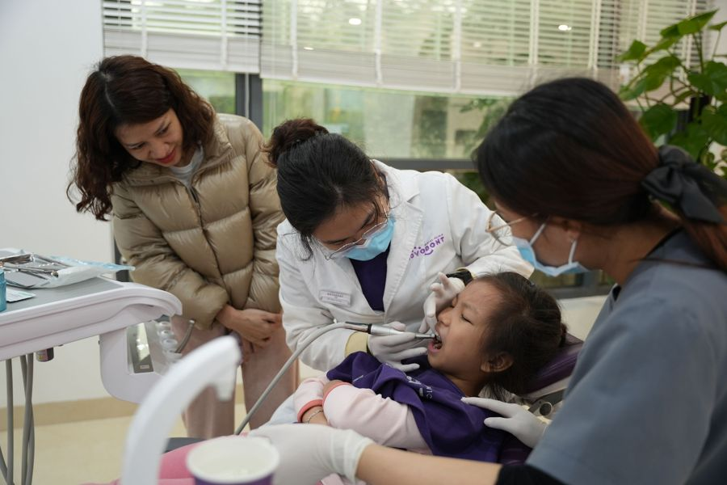
hero-1-mom-daughter-checkupReserveMom leans in during her daughter's check-up, daylight, plants. − masks and an instrument in the mouth; readable clinic name on the coat → needs retouch. Reserve.Ông Ngọc Dư · Pexels
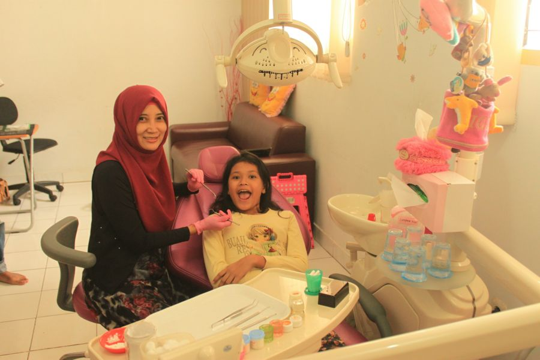
hero-2-mom-girl-chairNoHuge laugh, no masks. − the woman is the dentist, not the parent; yellow light, cluttered 2010s room. Rejected for hero.Mufid Majnun · Unsplash
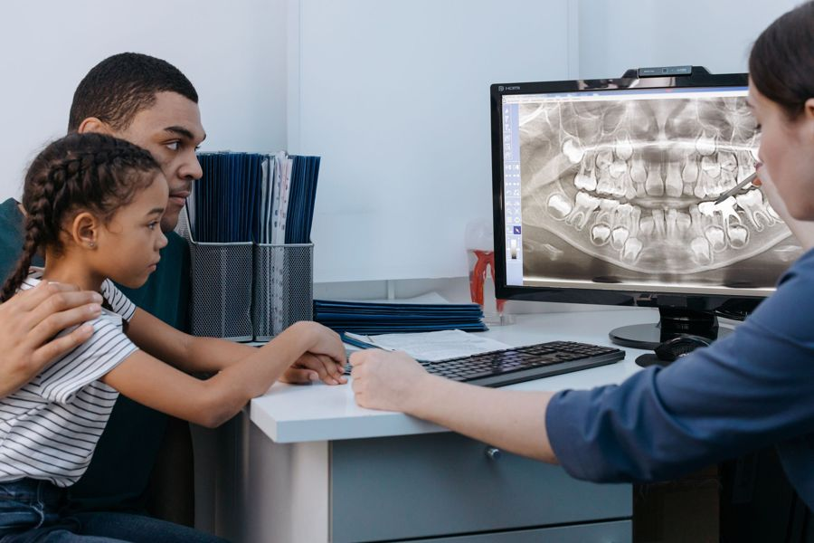
hero-3-dad-daughter-xrayPick · in clinicDad + daughter + dentist looking at her X-ray together: parent and child in the clinic, no instruments, no masks. − cool light, desk not chair. Best in-clinic option.cottonbro studio · Pexels
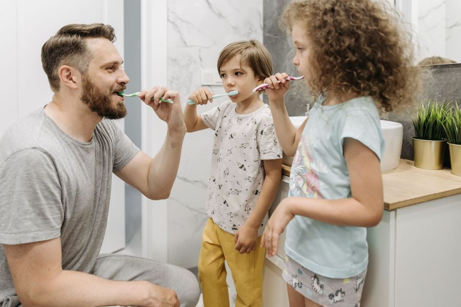
hero-4-dad-kids-brushingPick · moodLiterally a Saturday morning: dad and two kids brushing, bright, warm, real. − not a clinic. Strongest mood for 'Dentistry on family time'.Pavel Danilyuk · Pexels
Comfort & 'nothing until you say go' 6
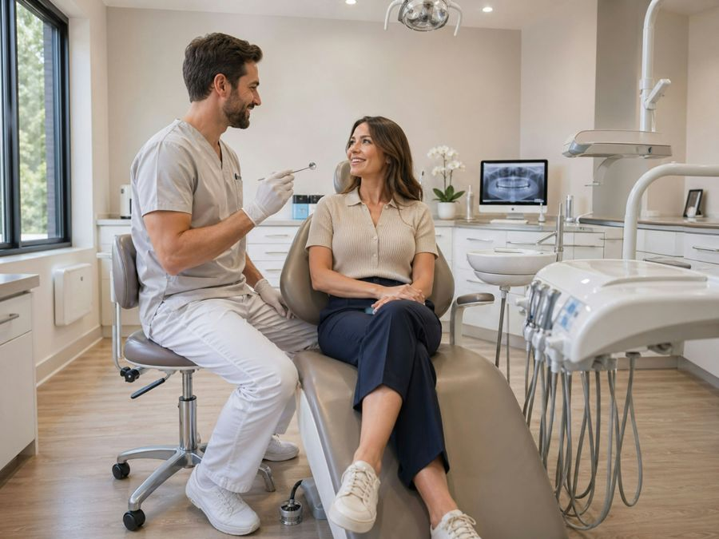
consult-dentist-talkDentist and patient talking before anything starts. Bright, wood, no masks.Harold Hisona · Unsplash
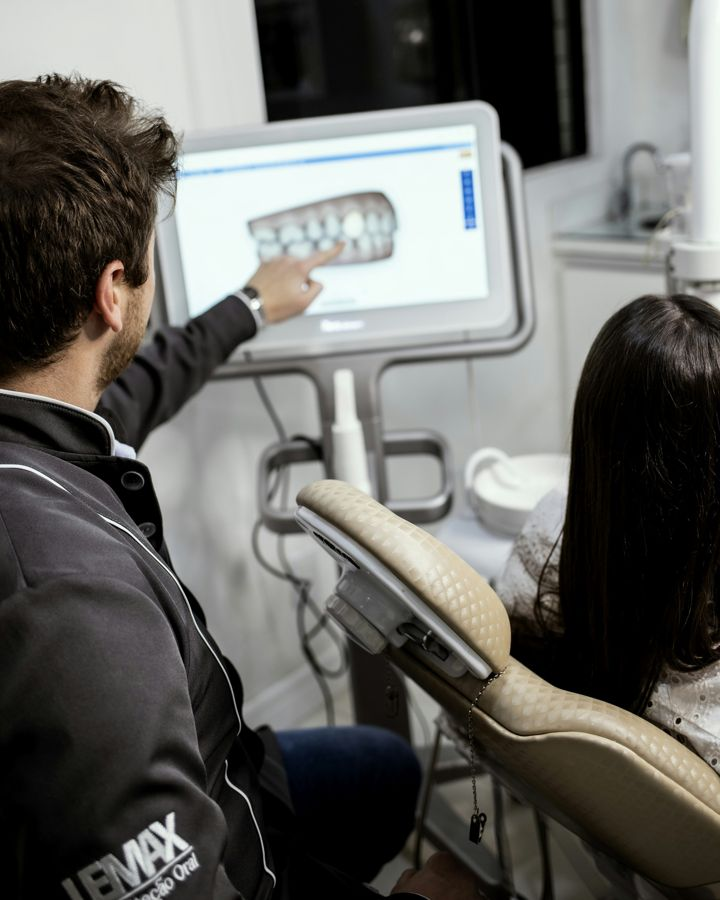
consult-scan-on-screen'We show you on screen first' — dentist walks the patient through her 3D scan.Filip Rankovic Grobgaard · Unsplash
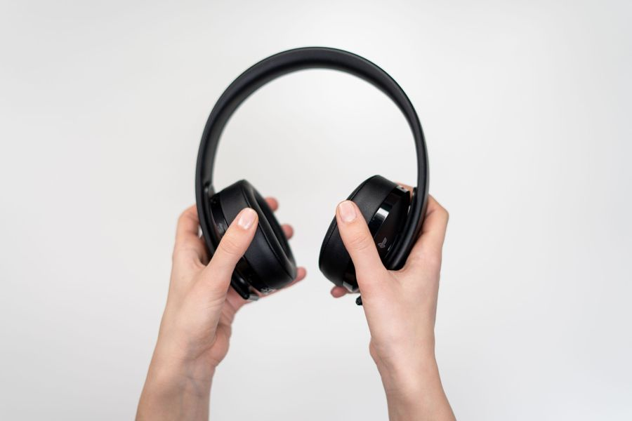
comfort-headphonesObject shot: noise-canceling headphones, white ground, no logo.cottonbro studio · Pexels
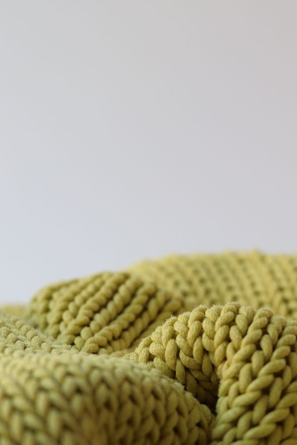
comfort-blanket-knitObject shot: chunky knit in olive — sits next to spring green.Mike Murray · Pexels
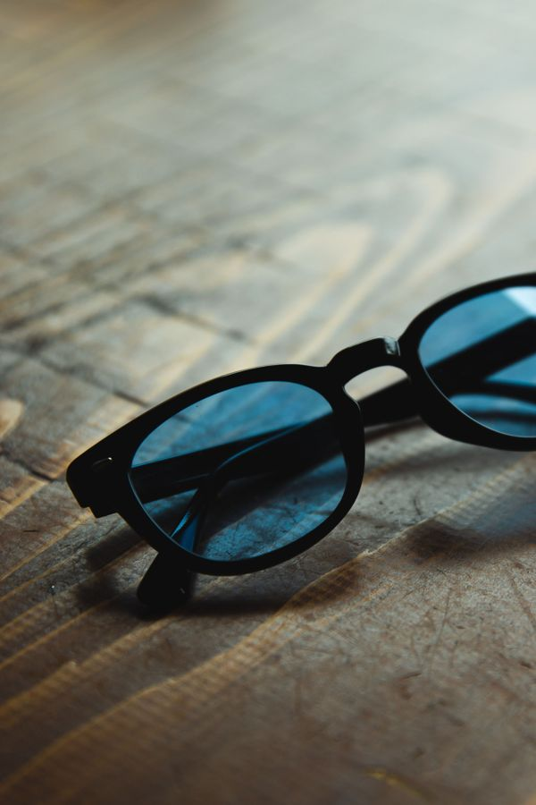
comfort-sunglassesObject shot: sunglasses against the chair light.Ryutaro Tsukata · Pexels
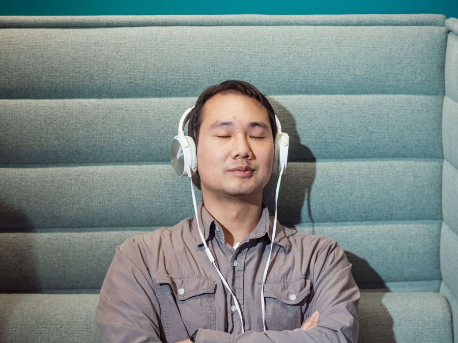
comfort-man-headphonesCalm adult with headphones (from direction B) — for the comfort plan step.Kindel Media · Pexels
Our team (3 dentists) 3
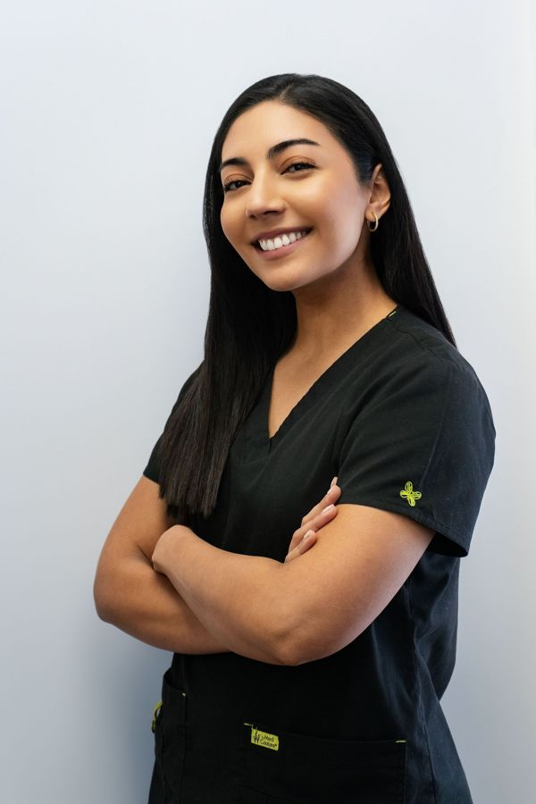
team-dr-1Dr. #1 — family & anxious patients, Spanish-speaking. Clean scrubs, no clinic logo.Manuel Toledo · Pexels
kids-brushingKid brushing, close — for kids' cleaning / New Patients.Mieke Campbell · Unsplash
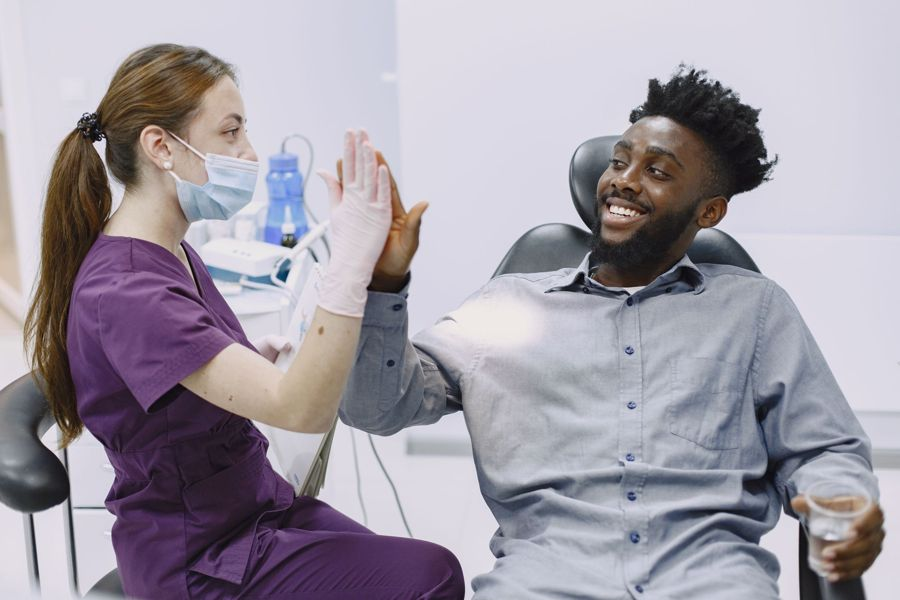
proof-high-fivePatient high-fives the hygienist — sample-review moment.Gustavo Fring · Pexels
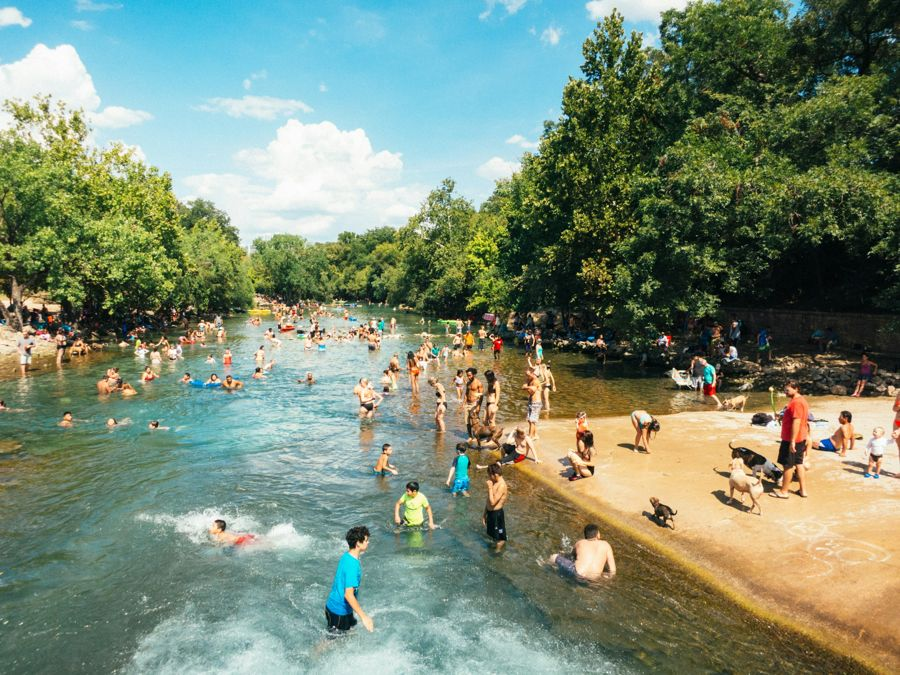
austin-barton-springsBarton Springs Pool — brand story 'spring-fed' (footer / Our Team intro), not used as the clinic location.Tomek Baginski · Unsplash